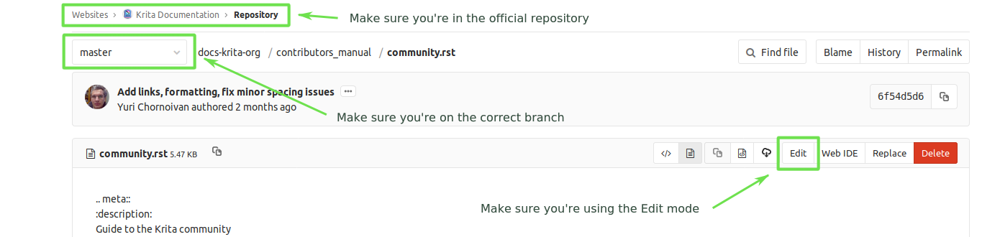

Krita 說明文件貢獻指南¶
Welcome to the Krita Manual Contribution Guide!
If you're interested in contributing to Krita's documentation, you're in the right place.
Krita is (free) open source software, which effectively makes us a community project with dozens of volunteers pitching in to make it better. This, of course, requires we keep track of manuals and how-to's for new volunteers to come in and help us. The various places we’ve done this have been rather spread out, so the contributors' manual is an attempt to consolidate all the information. It is therefore very technical in places.
This documentation will include:
- 一份 Krita 的參考文件
This one is probably what everyone is expecting when they look up Krita's documentation. Dry, basic, 'what does this button do' type of information.
- 一般通用概念指南
We've found over the past two years that for certain types of users, a reference manual, even with some examples, just isn't enough. The manual should also provide fast and concise explanations for things, and provide a basic workflow for preparing an image for the web.
We also have found that certain concepts, such as color management and layer handling are far more advanced in Krita than the average artist is used to. Krita is free and many of its users will not have formal training in digital artwork. So there is no pre-existing artist-focused knowledge on how to use color management or filter layers.
In addition there are systems that are unique to Krita, for example the brush system, the transform masks, the alpha inheritance and the perspective assistants. Finally, there are users who aren't familiar with even standard painting workflows, and are not flexible enough to understand how to port a tutorial for SAI or Photoshop to Krita.
- 一些現有的文章和影片教學
Apparently, one of the great things about Krita's team is how we connect with artists and acknowledge that they're doing cool stuff. The same should count for tutorials, especially because there are ways of using Krita and ways of approaching painting that are unique and we should encourage people to share their knowledge.
- 給貢獻者的手冊
What you're reading right now!
- krita.org 的教學
There have been a bunch of tutorials on the krita.org and the krita-foundation.tumblr.com, the former focusing on explaining how to use a new feature and the later stimulated by user request.
- 常見問題與解答 (FAQ)
This one is already online and a merger of the different FAQs that we had. It's currently being translated and we hope to keep this one the primary one to update.
給首次貢獻者的指引¶
Unlike Mediawiki, Sphinx works more like how we write code for Krita.
First things first, you will want to talk to us! For this you can join us in the chatroom "#krita" via matrix. A introduction about Matrix is given here. Create a matrix on webchat.kde.org account and join the #krita:kde.org channel. Or more importantly, make an account at identity.kde.org. The account you make at identity can be used to both access invent.kde.org as well as the phabricator, where we organise Krita development.
Sphinx works by writing simple text files with reStructuredText mark up, and then it takes those text files and turns them into the manual. We keep track of changes in the manual by putting them into a version control system called Git.
作出更動¶
Because we use Git, there's only a few people who can put things into the version control system, so if you want to make changes you will need to put it up for review.
以編輯 (Edit) 模式建立合併請求 (Merge Request)¶
備註
This method is only suitable if you have no push access to KDE repositories. Otherwise it would commit your changes directly to the repository, which is against the current guidelines.
Recommended for users without a technical knowledge.
Not recommended when you want to change more than one file at once. (See 以 WebIDE 建立合併請求 (Merge Request) or 以命令列建立合併請求 (Merge Request) if you want to change more files, or simply edit only one per merge request).
If you have a lot of changes you want to contribute, we recommend trying to follow these instructions.
Get a KDE identity.
Login to KDE_gitlab.
Go to the repository and press fork.
You should be redirected to the fork of your repository now. Typically it's located at
invent.kde.org/YOUR_KDE_LOGIN_NAME/docs-krita-org.Come back to the official repository. Make sure you're browsing
Documentation > Krita.org Documentation, not your own fork. Otherwise this method won't work correctly.

Gitlab has an option to Edit files in the gitlab itself. To access this, go to .
At the top of the page you should see a dropbox with
masteras a chosen item.Find the file you want to edit, open it and then click Edit.
Make your changes. (Note: in this mode you can edit only one file at a time).
Go to the smaller textbox below and write a nice message in the commit message section with the changes you've made. When done, press Commit changes. This will make a merge request for you, just fill in all of the fields as explained here: 建立合併請求的準則.
The downside is that right now there's no way to tell if you made errors with the mark up using this method. Please check your changes with the Online Sphinx Editor (just copy and paste the entire file you're editing).
注意
Edit and WebIDE are two different things! Make sure you select Edit.
{kind=link}
以 WebIDE 建立合併請求 (Merge Request)¶
Recommended for users with a bit of knowledge about Git that want to edit multiple files at once.
Not recommended when you don't know what a branch is (see 以編輯 (Edit) 模式建立合併請求 (Merge Request) instead).
Follow the instructions above to login to KDE_gitlab and create your fork.
Go to your fork (make sure the url contains your username).
Make sure you're on the
masterbranch.Click WebIDE. This should take you to a page that has a list of files on the left side and a big empty space for file contents on the right side.
Open the files you want to edit and make the changes.
Click Commit.... Double-click on all files in the Unstaged changes category to move them to Staged changes.
Click Commit... again - it will expand a commit message textbox. Write commit message that explains what changes have you made and why.
Make sure the settings are correct: you need to select Create a new branch (the name of the branch should be:
[username]/[very short description of your changes]). If you finished your changes, make sure that Start a new merge request is checked. Otherwise you'll need to make a new merge request manually later.Click Stage & Commit.
Fill all of the fields correctly: see 建立合併請求的準則.
To create a new merge request manually, go to Krita Manual official repository (make sure the url doesn't contain your username now) and click Create a new merge request (bright green button at the left). Select your fork and select the branch that you've created in WebIDE.
備註
If you don't have a push access to the official repository, gitlab won't allow you to save your changes if you were editing the official repository by mistake (and Create a merge request won't help with that: you still need to commit your changes to your branch, but if you don't have push access, you can't do it). It will just show the message: An error occurred whilst committing your changes. Please try again.
In this case, simply copy contents of all of the files you changed, go to your fork and paste them in the fork WebIDE.
以命令列建立合併請求 (Merge Request)¶
Recommended for users that know how Git works and how to use command line.
Not recommended when you don't know what a branch is (see 以編輯 (Edit) 模式建立合併請求 (Merge Request) instead).
Follow the instructions above to login to KDE_gitlab and create your fork.
Clone the repository locally with git clone. The repository page has the urls you can perform git clone from, and you can then push to your fork. The advantage of this is that you can use all the tools on your computer to edit these text files as well as build the manual locally to check for errors. (You need to do this step only once).
# for ssh access git clone git@invent.kde.org:<username>/docs-krita-org.git git remote add upstream git@invent.kde.org:documentation/docs-krita-org.git # for https access git clone https://invent.kde.org/<username>/docs-krita-org.git git remote add upstream https://invent.kde.org/documentation/docs-krita-org.git
Remember to always pull changes from the official repository before making new changes:
git pull upstream master
Make sure you create a new branch for your changes, since september 2019, all changes should be branched from
master.git checkout master # and then: git checkout -b "<username>/<description of the new feature>"
After you make your changes, commit them and push to your fork. For a detailed description of how to use Git in terminal in case of this workflow, go to Forking on Gitlab.
# install the python3-sphinx package for your system. For example for Ubuntu: sudo apt install python3-sphinx # build the manual (reports potential errors, allows to inspect changes in the browser) make html # make sure everything is correct git status git diff # add all of the files git add . # commit your changes git commit # submit your changes to your fork git push
Finally, go to the website of the original repository, and then to Merge Requests. Select your fork and the correct branch and create a new merge request. For instruction on how to fill the fields, see 建立合併請求的準則.
建立合併請求的準則¶
Your commit messages should conform to standards explained here: How to Write a Git Commit Message
Title and Description should explain what changes did you make and why did you make them, just like a commit message, so follow the guidelines from the link above in this case, too.
Target should point to
master.If you're sure the merge request will demand some changes later, start the title of your merge request with
[WIP].Make sure you checked Allow commits from members who can merge to the target branch. -- it is often needed for technical reasons that merge request is rebased on master, which technically changes the merge request, but it doesn't change the actual content of it. Rebase can be done by you or by the reviewer -- if you don't want to be bothered later too much, better check this checkbox so the reviewer can do it themselves with only a few clicks.
You can safely check Delete source branch when merge request is accepted in most cases.
Unless your reviewers tell you otherwise, check Squash commits when merge request is accepted. The first line of the commit message will come from the Title of your merge request and the rest of it will be taken from the Description of the merge request.
When you finish creating your merge request, go to IRC (see IRC 聊天室) and ask someone with push access to add the
Needs Reviewlabel on your merge request.You might get feedback on your merge request if it has mistakes. Just fix the mistakes in your branch in one of the following ways.
If you want to use Edit mode, just go to Changes section of the merge request and click on the pencil icon (with a tooltip that says Edit) to use the Edit mode again.
If you want to use WebIDE mode, go to your fork, select the branch your changes are on and go to the WebIDE.
If you edit files on your computer and work with terminal, make sure you're on the correct branch and push your changes - gitlab will update your merge request automatically.
After making changes, make sure you ask someone to change the label to
Needs Reviewagain.
For more detailed information, check out Forking on Gitlab in the technical section.
備註
At the time of writing this guide setting labels on merge requests is only possible by contributors with write access to the official repository. (If you don't know what that means, you're most probably not one of them). Because of that, when you create or change your merge request you need to get on IRC (see Krita 的社群) and ask someone to label it for you.
從命令列建置說明文件¶
For those that first want to try out some changes before embarking on a merge request right away (and already know how to use git and the command line) this is described as part of step 5. in 以命令列建立合併請求 (Merge Request).
一般思維¶
This is for determining what is an appropriate writing style. A writing style, whether we consider its practical or aesthetic qualities, is usually underpinned by a goal or general philosophy. What do we want to achieve with the manual, and for whom is the manual meant?
目標讀者¶
We cannot talk about a demographic in the sense that we know all Krita users are 55 year old men. Krita is used by a hugely different amount of people, and we are actually kind of proud that we have such a varied userbase.
Despite that, we know a couple of things about our users:
They are artists. This is explicitly the type of users that we target.
Therefore, we know they prefer pretty pictures.
They are visual.
They are trying to achieve pretty pictures.
Therefore, the implicit goal of each page would be to get the feature used for pretty pictures.
Other than that, we've observed the following groups:
High-school and college students trying out drawing software for illustrations. These usually have some previous experience with drawing software, like Paint Tool SAI or Photoshop, but need to be introduced to possibilities in Krita. This group's strength is that they share a lot of information with each other like tips and tricks and tutorials.
Professionals, people who earn their money with digital drawing software. The strength of this group is that they have a lot of know-how and are willing to donate to improve the program. These come in two types:
Non technical professionals. These are people who do not really grasp the more mathematical bits of a piece of software, but have developed solid workflows over the years and work with software using their finely honed instincts. These tend to be illustrators, painters and people working with print.
Technical professionals. These are people who use Krita as part of a pipeline, and care about the precise maths and pixel pushing. These tend to be people working in the games and VFX industry, but occasionally there's a scientist in there as well.
Adult and elderly hobbyists. This group doesn't know much about computers, and they always seem to get snagged on that one little step missing from a tutorial. Their strength as a group is that they adapt unconventional workflows from real life that the student wouldn't know about and the professional has no time for and create cool stuff with that, as well as that they have a tempering effect on the first group in the larger community.
From these four groups...
there's only one that is technical. Which is why we need the concept pages, so that we can create a solid base to write our manual texts on top of.
three of them likely have previous experience with software and may need migration guides and be told how.
two of them need to know how to get Krita to cooperate with other software.
two of them have no clue what they are doing and may need to be guided through the most basic of steps.
From that we can get the following rules:
一般書寫風格¶
- Use American English if possible.
We use American English in the manual, in accordance to Krita's UI being American English by default.
- Keep the language polite, but do not use academic language.
As a community, we want to be welcoming to the users, so we try to avoid language that is unwelcoming. Swearing is already not condoned by KDE, but going to the far other end, an academic style where neither writer nor reader is acknowledged might give the idea that the text is far more complex than necessary, and thus scare away users.
- Avoid using GIFs (open for debate)
The reason is that people with epilepsy may be affected by fast moving images. Similarly, GIFs can sometimes carry too much of the burden of explanation. If you can't help but use GIFs, at the least notify the reader of this in the introduction of the page.
- Keep it translation compatible
This consists of using SVG for infographics, and using the appropriate markup for a given text.
有關相片與傳統畫作¶
I would like to discourage photos and traditional paintings in the manual if they are not illustrating a concept. The reason is that it is very silly and a little dishonest to show Rembrandt's work inside the Krita GUI, when we have so many modern works that were made in Krita. All of the pepper&carrot artwork was made in Krita and the original files are available, so when you do not have an image handy, start there. Photos should be avoided because Krita is a painting program. Too many photos can give the impression Krita is trying to be a solution for photo retouching, which really isn't the focus.
Of course, we still want to show certain concepts in play in photos and master paintings, such as glossing or indirect light. In this case, add a caption that mentions the name of the painting or the painter, or mentions it's a photograph.
Photos can still be used for photobashing and the like, but only if it's obviously used in the context of photobashing.
有關使用影像¶
Avoid text in the images and use the caption instead. You can do this with the figure directive.
If you do need to use text, make either an SVG, so the text inside can be manipulated easier, or try to minimize the amount of text.
Try to make your images high quality/cute. Let's give people the idea that they are using a program for drawing!
Remember that the manual is licensed under GDPL 1.3, so images submitted will be licensed under that. In the case of CC-By-Sa/CC-By ensure that the file gets attributed appropriately through a figure caption. Needless to say, don't submit images that cannot be licensed under either license.
程序¶
So here we line out all the boring workflows.
建立標籤 (Tag) 與分支 (Branch)¶
Adding and removing text will be done in the draft branch.
Proofreading results for old pages will be considered as bugfixes and thus will go into the master branch and merged into the draft branch as necessary.
Before the draft branch is merged for a given release:
The master branch will be tagged with the old version.
The draft branch is first double checked that it has updated version number and updated epub cover.
The draft branch will not be merged until the day before a release to keep the pages intact for long enough.
Each release will have a version of the epub uploaded as part of the release process. .. Where do we get the POT files from? Even the translated versions?
移除頁面¶
If a feature is removed in a certain version, the corresponding pages:
Will first be marked deprecated.
This can be done as so:
.. deprecated:: version number 這裡寫上使用者應該如何代替該項已放棄使用的功能。Will be linked on a page called 'deprecated'
If the next version rolls around, all the pages linked in the deprecated section will be removed.
加入頁面¶
Ensure that it is located in the right place.
Follow the Krita 說明文件標記格式使用慣例 to ensure the page is formatted correctly.
Add the page to the TOC.
If the feature is new, add in versionadded:
.. versionadded:: version number optional something or the other.
As with images, don't add text that you do not have permission to add. This means that text is either written by you, or you have permission to port it from the original author. The manual is GDPL 1.3+ so the text will be relicensed under that.
更改頁面¶
If you fully rewrite a page, as opposed to proofreading it, the resulting page should be reviewed.
If you change a page because a feature has changed, and you have commit access, the change can be pushed without review (unless you feel more comfortable with a review), but you should add:
.. versionchanged:: version number
This and that changed.
In all cases, check if you want to add yourself to the author field in the metadata section on top.
Using deprecated, versionadded and versionchanged with the version number allows us to easily search the manual for these terms with grep:
grep -d recurse versionadded * --exclude-dir={_build,locale}
發現問題頁面¶
If a page slips through the cracks, either...
Make a merge request per the 作出更動 section.
Make a task at the Manual Project Workboard.
Make a bug at bugzilla under the project Krita in the section 'documentation'.
校對¶
There are two types of proofreading that needs to be done.
The most important one is reviewing changes people make. You can do this on KDE_gitlab in two ways:
Reviewing merge requests
You can help review merge requests. Request reviewing is usually done by programmers to find mistakes in each other's code, but because programming code is text based just like regular text, we can use this to check against typos as well!
A merge request, is an amount of changes done in a document (added, removed) put into a machine readable file. When someone submits a review request (on system like gitlab or github this is a merge or pull request), people who maintain the original files will have to look them over and can make comments about things needing to change. This allows them to comment on things like typos, over-complicated writing but also things that are incorrect. After a patch has been accepted it can be pushed into the version control system.
Commenting on changes in the manual.
Commenting changes happens after the fact. You can comment on a change by going to the commit message (from the repository page, go to history and then click on an entry), where you will be able to make comments on the changes made.
In both cases, the interface consists of the difference being shown, with on the left the old version, and on the right the new version. Lines that have been added will be marked in green while lines that have been removed will be marked with red. You can click a speech bubble icon to add an 'inline' comment.
The second major way the manual needs to be proofread is over the whole file. Many of the pages have only been checked for correctness but not for style and grammar.
For this you will need to follow the 作出更動 section, so that you can have full access to the pages and edit them.
翻譯¶
Translation of the manual is handled by the KDE localization community. To join the translation effort, go to the localization site, select the list of translation teams, select the language you wish to translate for, and follow the instructions on the team page to get in contact with fellow translators.
The localization team has access to the PO files for this manual, which is a file type used by translation programs like POEdit and Lokalize. A translation team is able to work together on translating these files and uploading them to the translations SVN. A special script will then take the translations from the SVN and bring them to the manual section to be incorporated on a daily basis.
Images can be translated if a translation team wants to provide their own images. All images in the image folder are by default for 'en'. When you want to translate a specific image, go into that folder and add another folder with your language code to add in the translated versions of images. So Sphinx will search for a dutch version of /images/Pixels-brushstroke.png at /images/nl/Pixels-brushstroke.png and for a dutch version of /images/dockers/Krita-tutorial2-I.1-2.png in /images/dockers/nl/Krita-tutorial2-I.1-2.png.
Finished translations also need to be added to the build script to show up online. Translator teams which are confident in the state of their translation should contact the main Krita team via the kimageshop mailinglist(kimageshop@kde.org), or foundation@krita.org, to accomplish this.
其他¶
For restructured text conventions, check Krita 說明文件標記格式使用慣例.